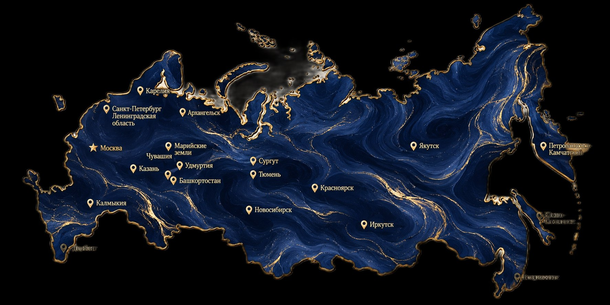
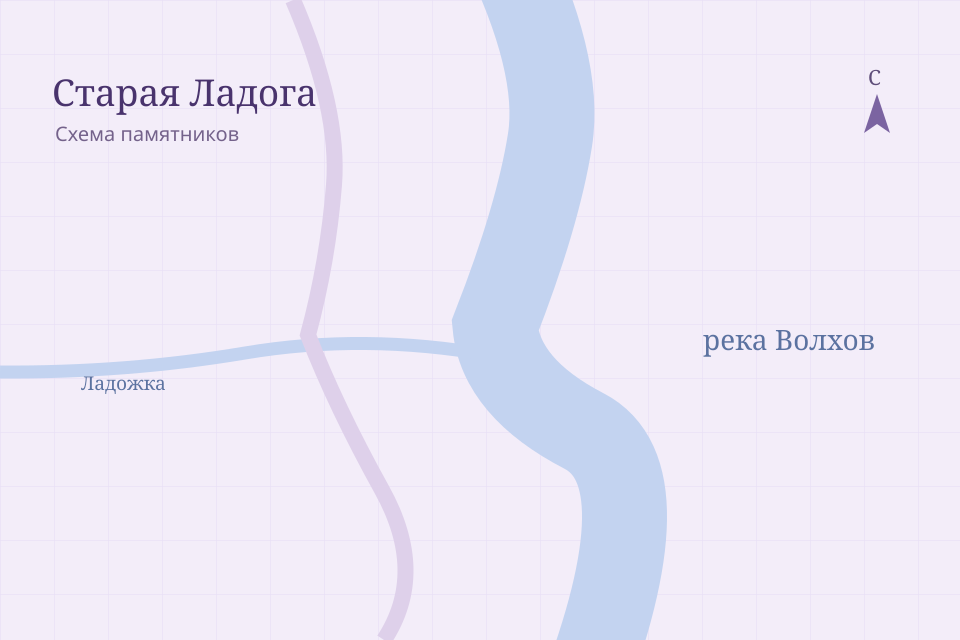

Исследуйте историю своей семьи
Начните с места, откуда родом ваша семья, и откройте людей, события и традиции этого края.
Загружаем карту…
Открыть сайт онлайнИнтерактивная карта


Карта иллюстративная. На схемах показано примерное расположение мест.